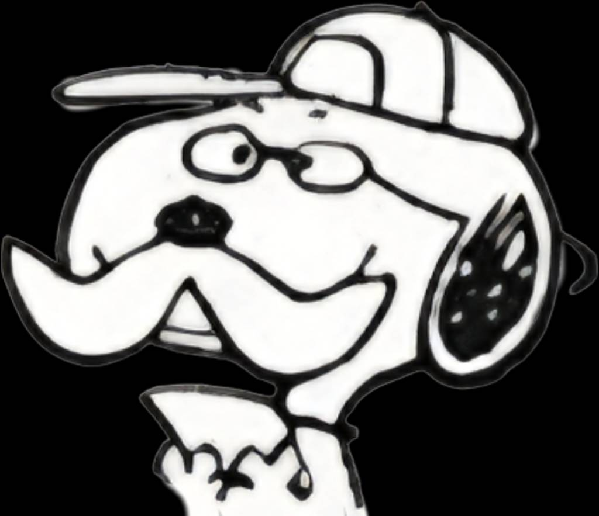
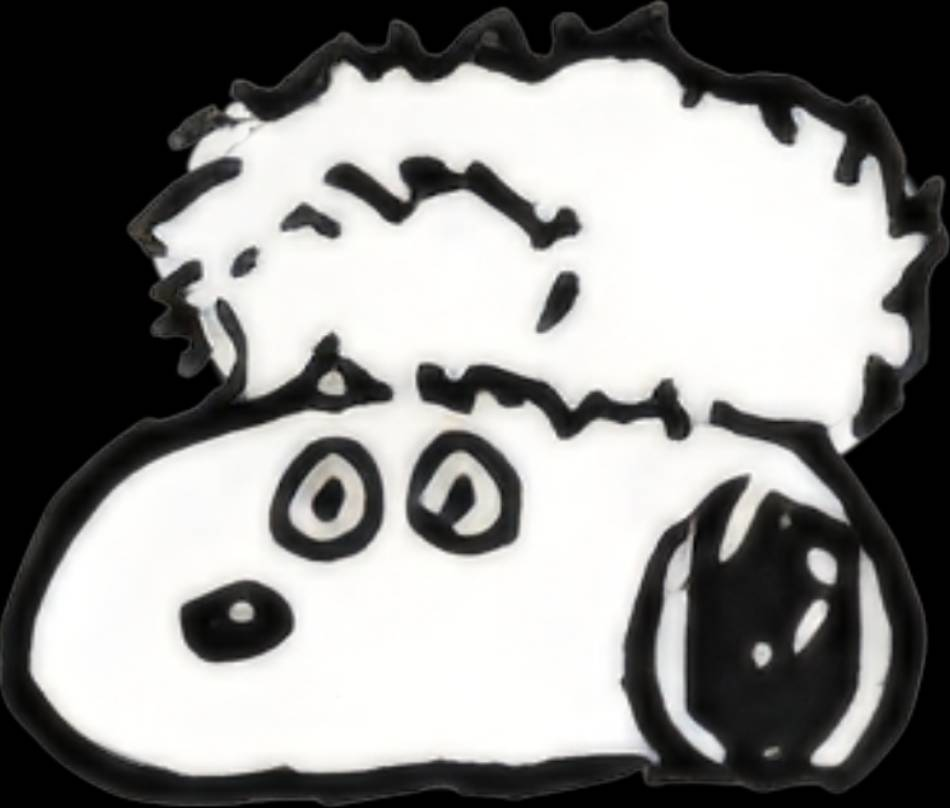
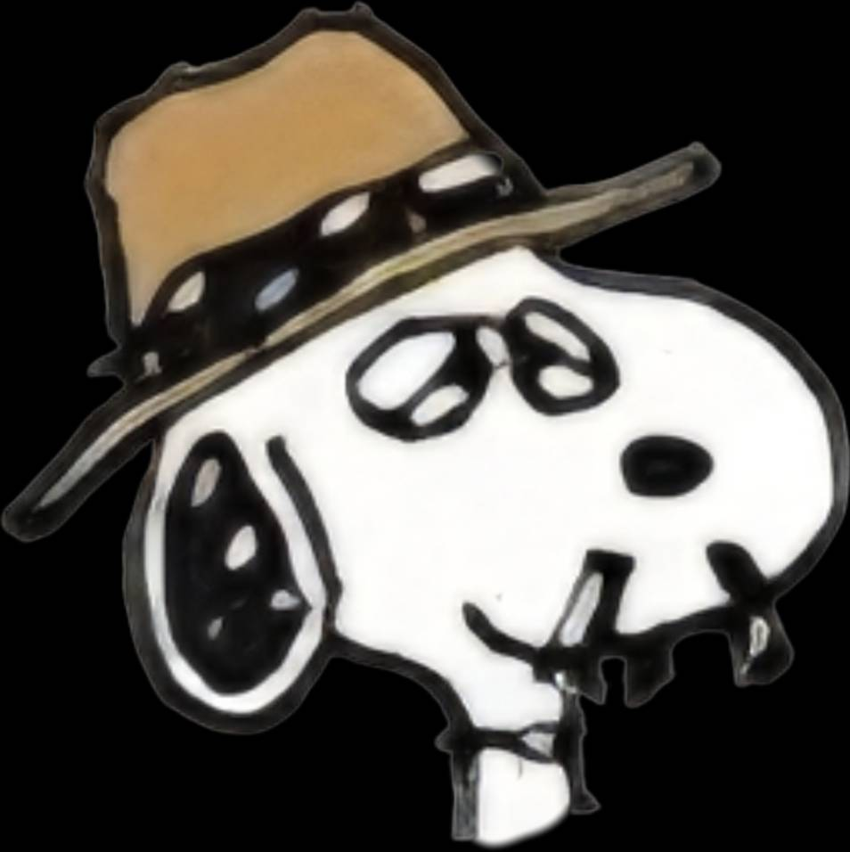
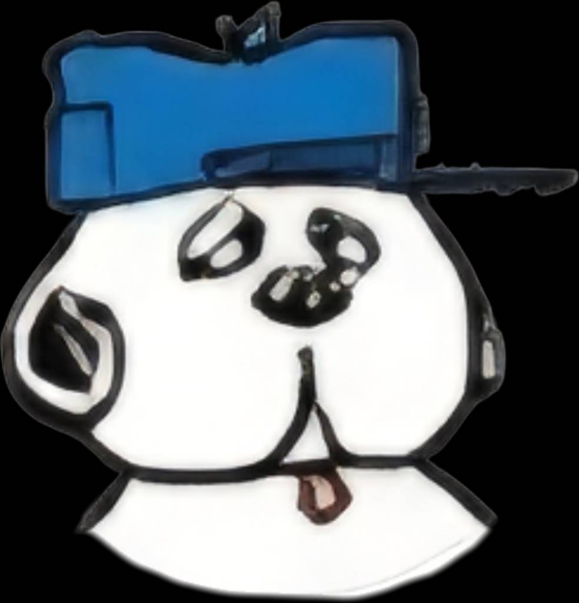
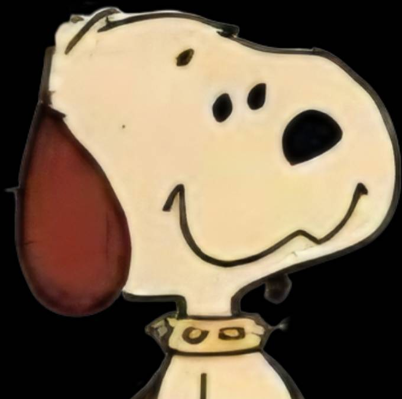

✨ 歡迎來到史努比家族世界
🐶 史努比家族與好友總覽（點擊卡片看詳細介紹）

1. 史努比 (Snoopy)
一隻小獵犬卻不承認自己是隻狗，天馬行空又充滿自信的偽裝天才。

2. 巴克斯特 (Baxter)
史努比的爸爸，留著兩撇小鬍子，在佛羅里達享受閒靜退休生活。

3. 米希 (Missy)
史努比的媽媽，總是帶著一頂溫暖的毛帽。

4. 史派克 (Spike)
獨自生活在荒漠仙人掌與土狼環境中的浪人兄弟。

5. 安迪 (Andy)
有著無害外表與毛絨絨身材，但和奧拉夫同為嚴重路癡。

6. 奧拉夫 (Olaf)
胖胖身材與睡眼惺忪模樣，曾得過狗狗界選醜冠軍！

7. 馬布爾斯 (Marbles)
腳穿運動鞋、斑點花紋，家族中最聰明並研究狗狗為何斜著走路。

8. 貝兒 (Belle)
住在堪薩斯市的唯一姊妹，常融入史努比的幻想世界。

9. 羅佛 (Rover)
電視版登場的咖啡色毛獵犬，擅長彈奏多布羅吉他。

10. 茉莉 (Molly)
電視版登場，愛穿藍色洋裝打扮、擅長彈奏曼陀林。

11. 菲菲 (Fifi)
史努比的女朋友，在電影版中與史努比有許多浪漫劇情。

好朋友：糊塗塌客
會忘記飛回家鄉的候鳥，史努比最好的秘書與球僮。